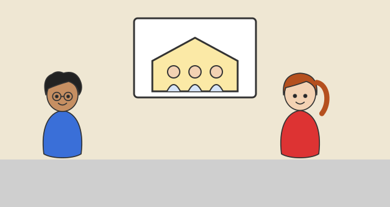

Menschen in Großbritannien
Mit einem KI-Tutor lernen
Ein KI-Tutor erklärt dir diese Seite und hilft dir bei den Aufgaben. Wähl deinen Assistenten:
Mit Claude öffnen Mit ChatGPT öffnen Mit Mistral Vibe öffnen
Du nutzt dein eigenes Konto beim Anbieter. Der Assistent ist kein Angebot von lernapps.net: lernapps liefert nur Inhalte und Aufgaben. Die Wahl gilt für alle Seiten, nur auf diesem Gerät.
Familien in der Klasse

Von links: Amir (Brille, schwarze Locken) und Ellie (roter Pferdeschwanz).
Quelle: eigene Zeichnung. Lizenz: CC-BY-4.0.Mittagspause in London. Die Kinder sitzen im Park, Peter ist nicht dabei. Mr Hill fragt nach ihren Familien. Ellie hat Familie in Cornwall, Sophie wohnt bei den Parkers, und Amir erzählt, dass bei ihm zu Hause zwei Sprachen gesprochen werden. Mr Hill sagt: „The grandparents of many children in our class moved to a new town many years ago.“ In jeder Familie ist es anders.
Aufgabe
Lösung
Die Großeltern vieler Kinder sind vor vielen Jahren in eine neue Stadt gezogen. richtige Antwort
moved ist die Vergangenheit von move (umziehen). many years ago heißt vor vielen Jahren.
Die Großeltern vieler Kinder ziehen bald in eine neue Stadt.
bald hieße soon. many years ago heißt vor vielen Jahren, also früher.
Die Großeltern vieler Kinder besuchen oft eine neue Stadt.
besuchen heißt visit. moved to heißt, dass sie dort neu zu wohnen begannen.
moved to heißt umgezogen nach. many years ago sagt, dass es vor vielen Jahren war.
Mehr dazu: Lernlandkarte Englisch · Menschen in Großbritannien
Das kannst du danach: Du beschreibst, dass in Großbritannien Menschen mit vielen verschiedenen Herkünften und Sprachen zusammenleben. Du sagst, wo jemand wohnt und welche Sprachen er spricht, und du sprichst respektvoll.
Viele Menschen, viele Sprachen
Im Vereinigten Königreich leben Menschen mit vielen verschiedenen Herkünften. Englisch ist die meistgesprochene Sprache. Daneben sprechen Menschen Welsh, Scottish Gaelic und Irish. Dazu kommen viele Sprachen von Menschen, die in das Land gezogen sind oder deren Familien einmal umgezogen sind.
Merke
Mit live in sagst du, wo jemand wohnt: My cousin lives in a flat. Mit come from sagst du, woher jemand oder die Familie kommt: Her family comes from a village. Nach many different und nach two, three … steht der Plural: many different animals, three books (nicht: three book). In Fragen mit does steht das Verb ohne -s: What does your sister play? Sag people from many places.
| Ausdruck | Bedeutung |
|---|---|
| grandparents | Großeltern |
| moved | zog um / zogen um (von move) |
| Welsh | Walisisch |
| Scottish Gaelic | schottisches Gälisch |
| Irish | Irisch |
Übung
Aufgabe
Lösung
Das muss nicht stimmen. Die Familie kann von ganz woanders kommen. richtige Antwort
Wo jemand wohnt, sagt nicht, woher die Familie kommt. Du weißt es nur, wenn das Kind es erzählt.
Das stimmt immer. Wer in einer Stadt wohnt, dessen Familie kommt von dort.
Das ist ein Fehler. Familien ziehen um, und niemand weiß es allein vom Wohnort.
Das stimmt, weil alle in Großbritannien gleich sind.
In Großbritannien leben Menschen mit vielen verschiedenen Herkünften. Sie sind nicht alle gleich.
Wohnort und Herkunft der Familie sind zwei verschiedene Fragen. live in sagt, wo jemand wohnt, come from sagt, woher jemand kommt.
Mehr dazu: Lernlandkarte Englisch · Menschen in Großbritannien
Aufgabe
Lösung
Richtige Antwort: Die Aussage stimmt nicht.
Englisch ist die meistgesprochene Sprache, aber nicht die einzige. Es gibt auch Welsh, Scottish Gaelic, Irish und viele Sprachen von Menschen, die in das Land gezogen sind.
Mehr dazu: Lernlandkarte Englisch · Menschen in Großbritannien
Aufgabe
Wähle die richtige Form.
Tipp
Nach many und nach einer Zahl steht der Plural. Bei children steht speak ohne -s.
- Meine Freundin spricht zwei Sprachen. → My friend speaks two ….
- Viele verschiedene Menschen leben in London. → Many different … live in London.
- In der Klasse sprechen viele Kinder zwei Sprachen. → In our class, many children … two languages.
Lösung
- My friend speaks two languages.
- Many different people live in London.
- In our class, many children speak two languages.
Aufgabe
Ergänze die Fragen.
Tipp
Nach does steht die Grundform des Verbs, ohne -s.
- Du fragst, woher die Familie eines Freundes kommt. → Where does your friend’s family … from?
- Du fragst, wo eine Freundin wohnt. → Where does your friend …?
Lösung
- Where does your friend’s family come from?
- Where does your friend live?
Aufgabe
Schreibe die Sätze auf Englisch.
Tipp
Nach two und many steht der Plural. Bei my friend steht lives mit -s.
- Wir sprechen zu Hause zwei Sprachen.
- Menschen in London kommen von vielen verschiedenen Orten.
- Meine Freundin wohnt in einer kleinen Stadt.
Lösung
- We speak two languages at home.
- People in London come from many different places.
- My friend lives in a small town.
Aufgabe
Hör zu und schreibe, was du hörst.
- KI
- KI
- KI
Lösung
- Her cousins learn another language.
- Sophie and Ellie live in Millbrook.
- Mr Hill asks Amir about his family.
Selbst sagen und schreiben
Aufgabe
Hör zu, sprich nach und nimm dich auf. Vergleiche dann mit dem Original.
Tipp
Hör den Satz zuerst. Sprich dann langsam nach und achte auf different, Welsh und welcome.
- Many different people live in this country.KI
- Welsh is a language in the United Kingdom.KI
- Everyone is welcome in our classroom.KI
Zum Aufnehmen braucht diese Aufgabe JavaScript. Die Beispiele kannst du auch ohne anhören.
Lösung
- Many different people live in this country.
- Welsh is a language in the United Kingdom.
- Everyone is welcome in our classroom.
Offene Aufgabe
Stelle dich oder eine erfundene Person in zwei bis vier Sätzen vor: Wo wohnst du, und welche Sprachen sprichst du? Schreibe nur das, was du erzählen möchtest.
Eine gute Antwort enthält:
Lösung
Hello! I live in a small town. I speak German and English. My friend speaks three languages at home.
Rückblick auf die Kapitel 1 bis 3
Mit dieser Seite endet das Kapitel „London“. Die Mittagspause ist bald vorbei. Schau noch einmal zurück: Das kannst du jetzt aus den Kapiteln 1 bis 3. Die Beispiele in dieser Tabelle stehen in keiner Übung.
| Das kannst du jetzt | Ein neuer Beispielsatz |
|---|---|
| einen Weg beschreiben | Walk to the corner and turn left. |
| ein Schild lesen | Please ring the bell. |
| Kleidung kaufen | Can I try a bigger size please? |
| die Teile des UK nennen | The UK has four parts. |
| von den Römern erzählen | The Romans came in the year forty-three. |
| einen Ort in London beschreiben | Tower Bridge is a famous bridge. |
| über Vielfalt sprechen | People from many places live here. |